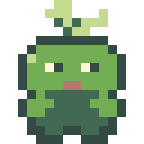
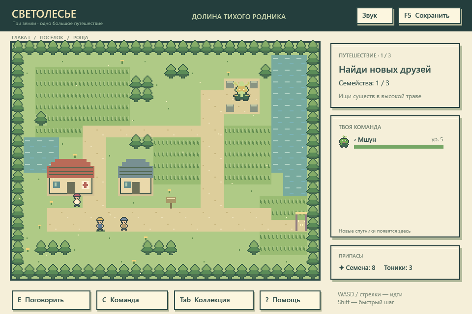
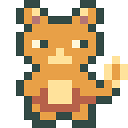
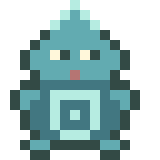
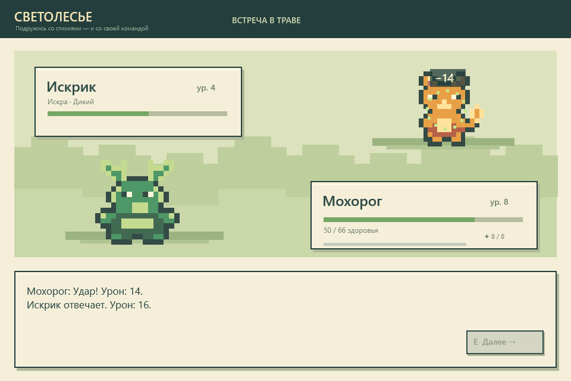
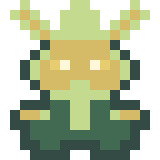

01 / ЛИСТПЕРВАЯ ФОРМА
Мшун
Маленький лесной друг. Его развитая форма — Мохорог с рогами, покрытыми листвой.

СВЕТОЛЕСЬЕСкачать игруПИКСЕЛЬНАЯ RPG · ДЛЯ WINDOWS
За тихой рощей начинается приключение. Собери команду необычных существ, открой три земли и узнай, как далеко может завести дружба.
Одиночная игра · Можно играть без интернета

01 — ЗА ПОВОРОТОМ ТРОПЫ
От первого шага в траве до встречи на лунной вершине. Исследуй в своём темпе — и не забывай заглядывать к целителю.
Выбери спутника, познакомься с жителями долины и собери три разных семейства для испытания Ветрокрона.
02 — ВМЕСТЕ СИЛЬНЕЕ
Три первых спутника, три характера. Сражайтесь, получайте опыт и открывайте новые формы с восьмого уровня.
Маленький лесной друг. Его развитая форма — Мохорог с рогами, покрытыми листвой.

Искра для твоего приключения. Вырастает в Жаролиса с хвостом из золотого огня.

Друг с берегов родника. Становится Акварином, который умеет направлять морские течения.
До шести спутников в команде. Пять цепочек эволюции. Множество поводов зайти в траву ещё раз.

КАДР ИЗ ИГРЫНЕ ТОЛЬКО СИЛА
Лист сильнее воды, вода — искры, а искра — листа. Подбирай спутников, меняй тактику и береги энергию для стихийного приёма.
А если встреченный друг тебе понравился — ослабь его и используй семя дружбы.
03 — ОСТАНОВИСЬ И ПОСЛУШАЙ
Лесные тропы, морской берег и тихая вершина звучат по-разному. Послушай музыку из игры.
Музыка включается только по твоему желанию.

СЛЕДУЮЩИЙ ШАГ — ТВОЙ
Собери игру, выбери первого спутника
и сворачивай с тропы навстречу новому.
Windows · C# / .NET 10 · Учебный проект
Для сборки установи .NET 10 SDK, открой папку Svetolesye из репозитория и запусти Start.cmd. Для уже собранной игры потребуется .NET Desktop Runtime 10 для Windows. Игра сохраняет прогресс в папке Data рядом с программой. Для обновления своей игры сохрани эту папку.
Стрелки или WASD — движение. E — действие. C — команда и эволюция. M — звук. Esc — помощь.